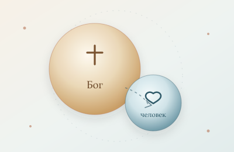
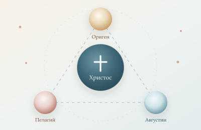
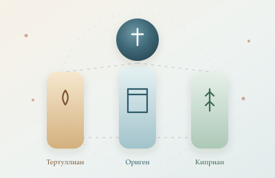
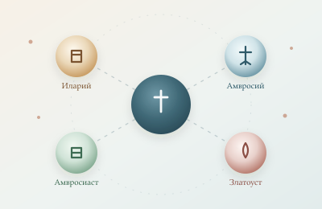
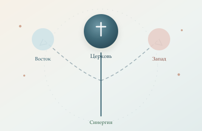

Оглавление Boosty-серии
Что это за серия
Это ранняя версия разбора: пять обобщённых статей, опубликованных на Boosty. Они короче и менее подробны, чем полная серия из 8 частей. Полная версия доступна в серии «Монергизм или синергия?».

Часть 1 · 20 мин
Одна воля
Разбор тезиса об одной воле и страхе смерти.
Читать→

Часть 2 · 25 мин
До начала споров
Три модели и ложная трилемма «Ориген — Пелагий — Августин».
Читать→

Часть 3 · 30 мин
Тертуллиан, Ориген, Киприан
Западная генеалогия и восточная традиция.
Читать→

Часть 4 · 30 мин
Иларий, Амвросий, Амвросиаст, Златоуст
Соборы и «проигнорированное» осуждение.
Читать→

Часть 5 · 35 мин
Первородный грех до Августина
Итоговый синтез и православный ответ.
Читать→
Полная версия
Если нужен более подробный разбор с первоисточниками, таблицами и приложениями, перейдите к серии из 8 частей. Boosty-серия — краткая ранняя версия.